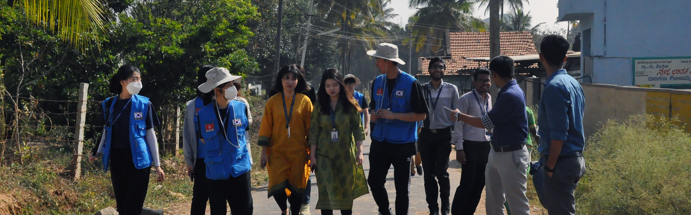
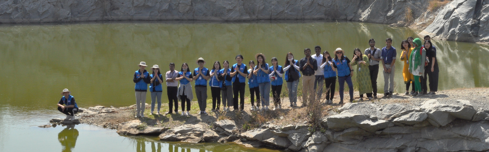

There are six major sources of water Pollution namely Domestic, Industrial, Agricultural, Radioactive wastes, Thermal pollution, and Oil pollution. Presence of heavy metals in water causes diabetes, respiratory disease, cancer, diarrheal disease, neurological disorder, cardiovascular disease, etc. The team is working towards understanding the real-world problems and offering possible solutions to the health impacts manifested in the communities. The specific topic chosen for the current year activities is the development and validation of Non-Invasive Glucometer. The device has been designed to detect blood glucose level non-invasively using spectrophotometric method and statistical data analysis techniques. This device measures random blood sugar (RBS) of humans with an appreciable amount of clinical relevance and accuracy.
A device has been designed to detect blood glucose level non-invasively using spectrophotometric method and statistical data analysis techniques. This device measures random blood sugar (RBS) of human with an appreciable amount of clinical relevance and accuracy. The trans-receiver module of this instrument consists of a Near Infra-Red light sensor as a transmitter. The receiver module captures the reflected light intensity after it passes through the skin and depicts the value of glucose level in terms of voltage. The calibration and scaling was done on 100 subjects of different age groups and patients with type-1 diabetes. Low cost and compact design make its ideal for regular random blood sugar measurement. Non-invasive body parameters monitoring and disease detection is one of the emerging research area now a days. Diabetes mellitus is a condition in which the body does not produce sufficient insulin and this is one of the major health problems. In this work a device has been designed to detect blood glucose level Non-invasively.